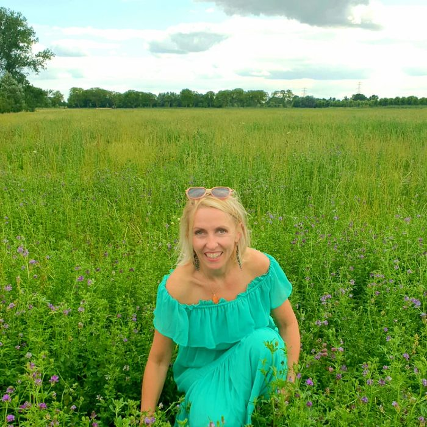
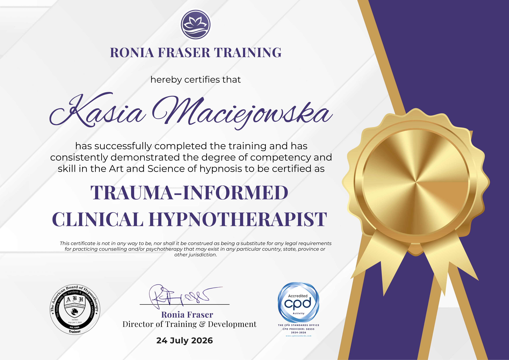
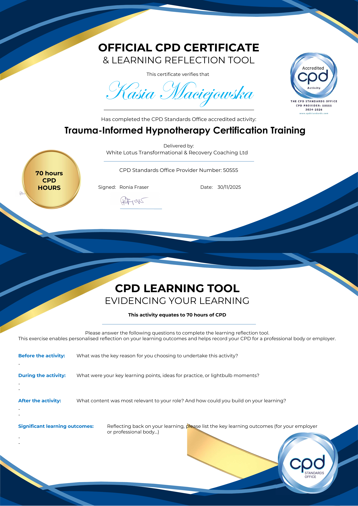
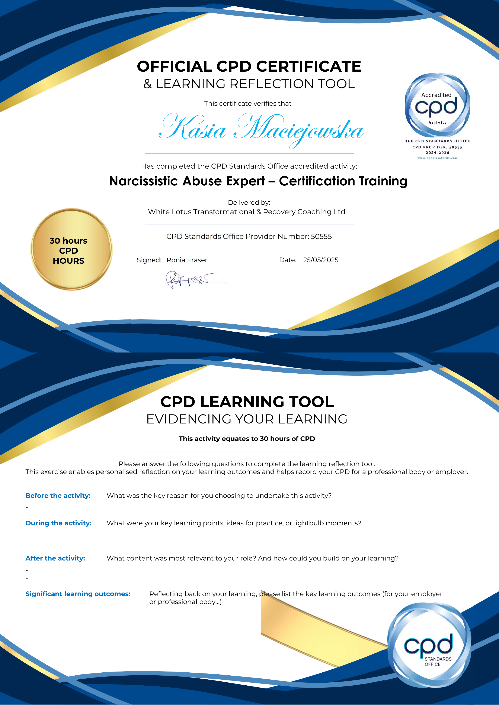
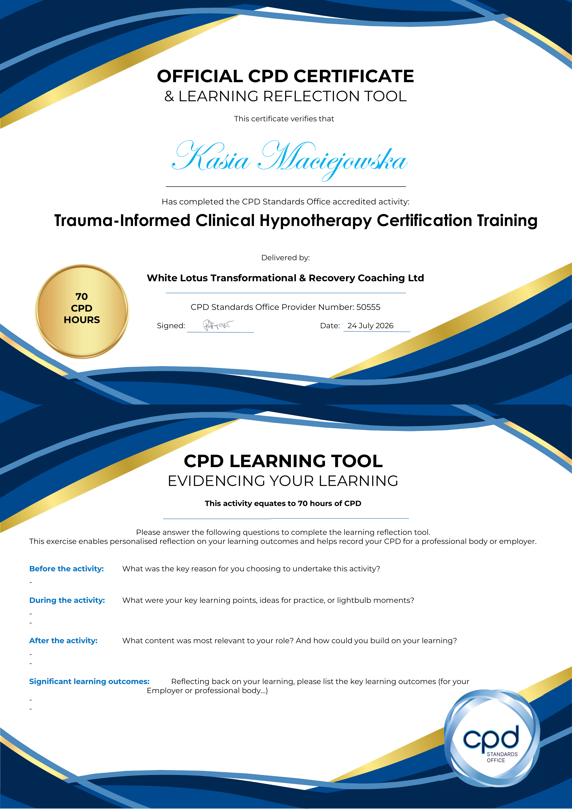

Dlaczego Robię To, Co Robię
Rozumiem narcystyczną przemoc nie tylko dzięki profesjonalnemu szkoleniu, ale też dzięki własnemu doświadczeniu. Właśnie dlatego ta praca jest dla mnie tak osobista — i dlatego tak bardzo zależy mi, by zrobić to dobrze dla Ciebie.
Wiem, jak to jest zgubić siebie w związku. Kwestionować swoją rzeczywistość, wątpić we własną intuicję i po cichu zastanawiać się, dlaczego po prostu nie możesz odpuścić.
To, co kiedyś wydawało się niemożliwe do wyobrażenia, stało się moją rzeczywistością: wyzdrowiałam. Odnalazłam wewnętrzny spokój i nauczyłam się chronić swoją energię, znów ufać sobie i budować zdrowe, pełne miłości relacje oparte na szacunku i emocjonalnym bezpieczeństwie.
W miarę jak odbudowywałam własne życie, zaczęłam z pasją zgłębiać, dlaczego narcystyczna przemoc tak głęboko nas dotyka i co naprawdę potrzebne jest do wyzdrowienia. To skłoniło mnie do zanurzenia się w tematykę leczenia traumy, coachingu transformacyjnego, hipnoterapii i holistycznego uzdrawiania. Łącząc profesjonalne szkolenie z osobistym doświadczeniem, wnoszę do tej pracy zarówno prawdziwą wiedzę, jak i szczere zrozumienie.
Moją największą siłą jest tworzenie przestrzeni, w której czujesz się naprawdę widziana, zrozumiana i wspierana. Dzięki ciepłu, współczuciu i podejściu uwzględniającemu traumę pomagam Ci na nowo połączyć się z wewnętrzną siłą i iść naprzód z pewnością siebie.
Nie musisz przechodzić przez tę drogę sama. Będę szła obok Ciebie, krok po kroku, tak długo, jak będzie to potrzebne, aż poczujesz się znów zakorzeniona w sobie.
Zarezerwuj Bezpłatną Rozmowę Wyjaśniającą
O Mnie
Przez wiele lat byłam w związkach, które wydawały mi się miłością, ale w rzeczywistości brakowało im emocjonalnego bezpieczeństwa i stabilności.
Dorastając w dysfunkcyjnym środowisku, nie miałam jasnego wzorca zdrowej więzi emocjonalnej. Nieświadomie powtarzałam znane wzorce i wciągałam się w związki, które stopniowo wyczerpywały moją energię i podkopywały moje poczucie własnej wartości.
Kiedyś wierzyłam, że coś jest ze mną nie tak. Teraz widzę to wyraźnie: reagowałam na niezdrową dynamikę — nic we mnie nie było zepsute.
Jako osoba, która przeżyła narcystyczną i emocjonalną przemoc, z pierwszej ręki wiem, jak przytłaczający i izolujący może być proces zdrowienia. Moja własna droga do wyzdrowienia pokazała mi, jak rzadko można znaleźć specjalistów, którzy naprawdę rozumieją to doświadczenie. Właśnie dlatego postanowiłam wyszkolić się i wyspecjalizować w tej dziedzinie — abyś Ty nie musiała szukać tak długo jak ja.
Poprzez głęboką pracę wewnętrzną, edukację i czas, zrozumiałam, że prawdziwe wyzdrowienie wymaga czegoś więcej niż tylko wiedzy. Chodzi o to, by czuć się bezpiecznie, wspierana i naprawdę widziana, odbudowując siebie od wewnątrz. To zrozumienie zmieniło dla mnie wszystko.
Dziś jestem praktykiem specjalizującym się w wychodzeniu z narcystycznej przemocy z uwzględnieniem traumy oraz hipnoterapeutką. Wspieram innych w odzyskiwaniu wewnętrznej siły i ponownym łączeniu się z autentycznym sobą, bezpiecznie i ze współczuciem.
Pochodzę z Polski, ale od ponad 25 lat mieszkam i pracuję za granicą i czuję się głęboko Europejką. Pracuję biegle w języku angielskim, niderlandzkim i polskim, co pozwala mi wspierać klientki z różnych kultur i środowisk.
Zanim poświęciłam się tej pracy, spędziłam 16 lat w dziale Compensation & Benefits, pracując na całym świecie z ludźmi z różnorodnych kultur. To ugruntowało mnie w strukturze i strategii oraz nauczyło, jak skutecznie dostosowywać się i komunikować w różnych kulturach i perspektywach.
Poza karierą zawodową zawsze pociągał mnie rozwój osobisty, dbałość o dobrostan, podróże oraz praktyki łączące ciało i umysł, takie jak pilates i taniec latynoamerykański.
Te doświadczenia kształtują sposób, w jaki pracuję dziś: w sposób ugruntowany, intuicyjny, kierowany prawdziwą ludzką więzią i świadomością.
Moje Certyfikaty




Moja Misja
Moją misją jest pomaganie osobom, które przeżyły narcystyczną przemoc, w odzyskaniu życia, ponownym połączeniu się ze sobą i uzdrowieniu z większą jasnością, wsparciem i pewnością siebie, niż ja miałam na swojej drodze.
Wierzę, że powrót do zdrowia nie musi być długim i samotnym procesem. Przy właściwym przewodnictwie, zrozumieniu i narzędziach uzdrowienie staje się nie tylko możliwe, ale naprawdę transformujące.
Moja praca jest poświęcona pomaganiu Ci w:
- Uwolnieniu się od zwątpienia w siebie, zamętu i więzi traumatycznych
- Odbudowie zaufania do siebie, zdrowych granic i odporności emocjonalnej
- Uzdrowieniu ran pozostawionych przez emocjonalną i narcystyczną przemoc
- Ponownym połączeniu się z wewnętrzną siłą, intuicją i autentycznym sobą
- Stworzeniu życia zakorzenionego w spokoju, pewności siebie i zdrowych relacjach
Wszystko, co robię, opiera się na bezpieczeństwie, współczuciu, szczerości i empowermencie.
Ponieważ moja misja to coś więcej niż pomoc w wyzdrowieniu z tego, co się wydarzyło.
Chodzi o pomoc w powrocie do wersji siebie, która nigdy tak naprawdę nie została utracona — jedynie pogrzebana pod latami przetrwania — abyś mogła stworzyć życie, na które naprawdę zasługujesz.